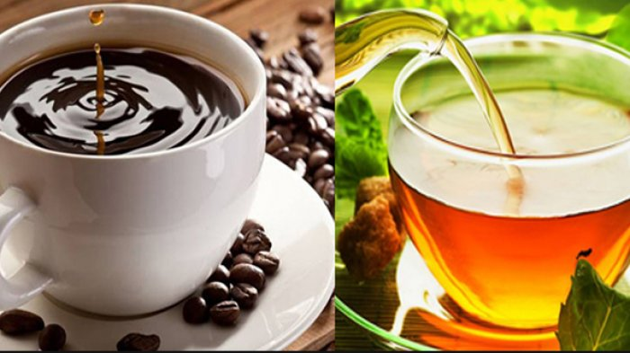

Plus Minus Diet Vegetarian Yang Perlu Kamu Ketahui

Salah satu hal yang paling menyenangkan adalah terbangun di pagi hari lalu menyeruput teh atau kopi sambil menikmati pemandangan yang sejuk di pagi hari. Dua minuman ini begitu nikmat untuk dikonsumsi, namun selalu ada peringatan “jangan minum kopi banyak-banyak” atau “jangan keseringan minum teh” dengan alasan sederhana, yaitu kurang baik untuk kesehatan jika terlalu sering dikonsumsi. Faktanya pun, konsumsi teh atau kopi terlalu banyak dapat menyebabkan peningkatan kecemasan ataupun insomnia. Padahal, baik teh ataupun kopi merupakan minuman yang dapat memberikan kebahagiaan dan ketenangan
Jika disuruh memilih antara kopi dan teh, jawabannya sederhana: pilih yang lebih sehat. Tapi, yang mana itu?
Sejarah Teh dan Kopi
Menurut legenda, teh pertama kali ditemukan oleh Kaisar Cina pada 2737 SM saat tidak sengaja daun jatuh ke dalam air yang sedang ia didihkan. Kemudian, ia mencicipinya dan terkejut dengan rasa dan manfaat setelah mengkonsumsinya. Sementara kopi, diyakini berasal di dataran tinggi Ethiopia di mana sejarah mengatakan bahwa seorang pengembala kambing bernama Kaldi melihat kambingnya menjadi hiperaktif setelah makan buat dari suatu pohon yang kemudian dikenal sebagai bibit kopi.
Sebelum menjawab pertanyaan manakah yang lebih baik –teh atau kopi, Anda juga perlu mengetahui manfaat dan bahaya dari konsumsi kopi dan teh yang berlebihan.
Manfaat dan Risiko Minum Kopi
Untuk peminum kopi, kabar baiknya adalah studi yang dilakukan oleh Harvard University menemukan bahwa orang yang minum kopi tiga sampai lima cangkir sehari akan mengurangi risiko kematian akibat penyakit tertentu. Kandungan antioksidan yang ada didalam kopi telah dikaitkan dengan perlindungan terhadap diabetes tipe 2, Parkinson, dan kanker tertentu.
Namun….
Zat alami yang ada di dalam kopi, tanpa disaring, telah terbukti meningkatkan kadar kolesterol. Terlebih, kandungan asam kopi yang lebih tinggi dibanding teh dapat menyebabkan terjadinya masalah pencernaan. Selain itu, konsumsi kopi empat cangkir atau lebih sehari justru dapat mengurangi kepadatan tulang sekitar 2-4%.
Selain itu, yang perlu Anda ingat adalah bahwa kopi memiliki kandungan kafein yang sangat tinggi serta merupakan stimulan. Sehingga, jika Anda sensitif atau tidak terbiasa konsumsi kopi, Anda akan merasa gelisah ataupun cemas saat mengkonsumsi kopi. Atau, jika Anda memiliki tekanan darah tinggi, Anda harus membatasi asupan kafein karena dapat menyebabkan peningkatan tekanan darah Anda.
Manfaat dan Risiko Minum Teh
Selama ini, konsumsi teh selalu dikaitkan dengan manfaatnya untuk kesehatan karena kandungan antioksidannya telah terbukti membantu mencegah pembuluh darah dari pengerasan dan dapat meningkatkan kesehatan otak. Selain itu, studi lain yang diterbitkan dalam jurnal kesehatan Nutrition Bulletin, menemukan bahwa konsumsi teh secara teratur dapat mengurangi risiko penyakit jantung dan diabetes. Bahkan, studi lain menemukan bahwa konsumsi teh dapat mengurangi tingkat stress dibandingkan dengan minuman berkafein lainnya, seperti kopi.
Peminum teh secara teratur juga memiliki kepadatan tulang yang lebih tinggi sehingga memperlambat terjadinya pengeroposan tulang. Penelitian lain juga telah menemukan bahwa peminum teh memiliki peluang yang lebih rendah untuk mengalami kanker kulit, payudara, dan prostat. Selain itu, kandungan fluoride dalam teh juga dapat untuk melindungi terhadap kerusakan gigi dan penyakit gusi.
Para peneliti juga menemukan bahwa konsumsi teh hijau, yang merupakan salah satu jenis teh terbaik, lebih dari dua cangkir sehari dapat meningkatkan kekebalan tubuh, membantu mempercepat metabolisme tubuh, serta dapat mengurangi risiko terjadinya penurunan daya ingat atau memori otak akibat pertambahan usia.
Namun…..
Kandungan tannin dalam teh dapat mengganggu penyerapan zat besi dalam tubuh. Sebuah studi telah menemukan bahwa konsumsi teh dapat menyebabkan terjadinya pengurangan penyerapan zat besi sebesar 62%. Selain itu, sebuah studi mengklaim bahwa konsumsi teh lebih dari tujuh cangkir sehari dapat melipatgandakan risiko kanker prostat dibandingkan mereka yang konsumsi teh tiga cangkir atau kurang.
Jadi, mana yang lebih baik? Kopi atau teh?
Setelah Anda membaca sebagian artikel ini, pasti Anda telah mengetahui bahwa kopi dan teh memiliki manfaat bagi kesehatan. Jika selama Anda tidak membuat kopi atau teh dengan campuran gula atau krim, kedua minuman tersebut dapat menjadi sumber nutrisi dan antioksidan yang baik untuk pencegahan penyakit. Jadi, jawaban dari pertanyaan manakah yang lebih baik, kopi atau teh adalah benar-benar tergantung pada Anda. Karena selama Anda tidak sensitif terhadap kafein dan tidak menderita sakit maag, Anda dapat mengkonsumsi kopi ataupun teh.